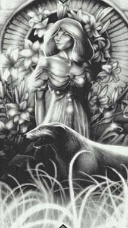

Флоримель(Флора, Эвелин Флаумель)Золотые волосы, синие глаза. Цвета одежды: зеленый и серый. Имеет несколько ирландских волкодавов, с кличками Дондер, Блитцен , и т.д. Символ - цветок лотуса на фоне частично зашедшего Солнца . Интересов у нее немного, в основном это власть, здоровье, интриги и мужчины. Она склонна к наглости и щегольству, любительница зрелищ, верующая в утверждение: "Умеренность суть ничто". Больше всего ее устрашает возможность оказаться не на той стороне. По этой причине она быстро и легко меняет объект своего служения, ни к кому вообще не ощущая истинной верности. В отличие от Фионы, она абсолютно не сведуща в генеалогии мужчин Янтарного дома, потому, что не хочет ответственности за власть. |
 |